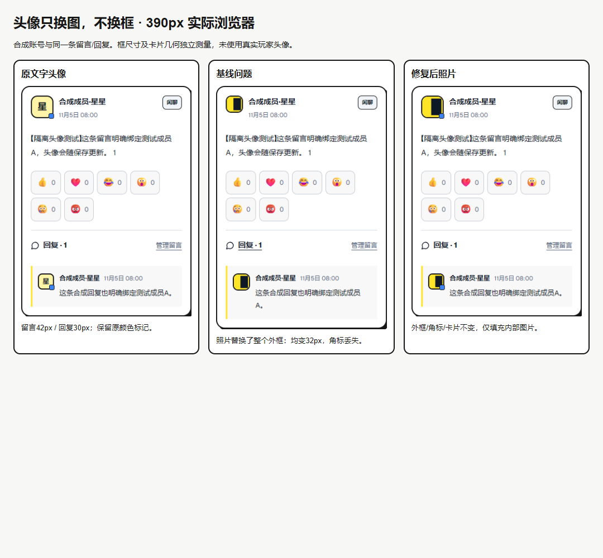
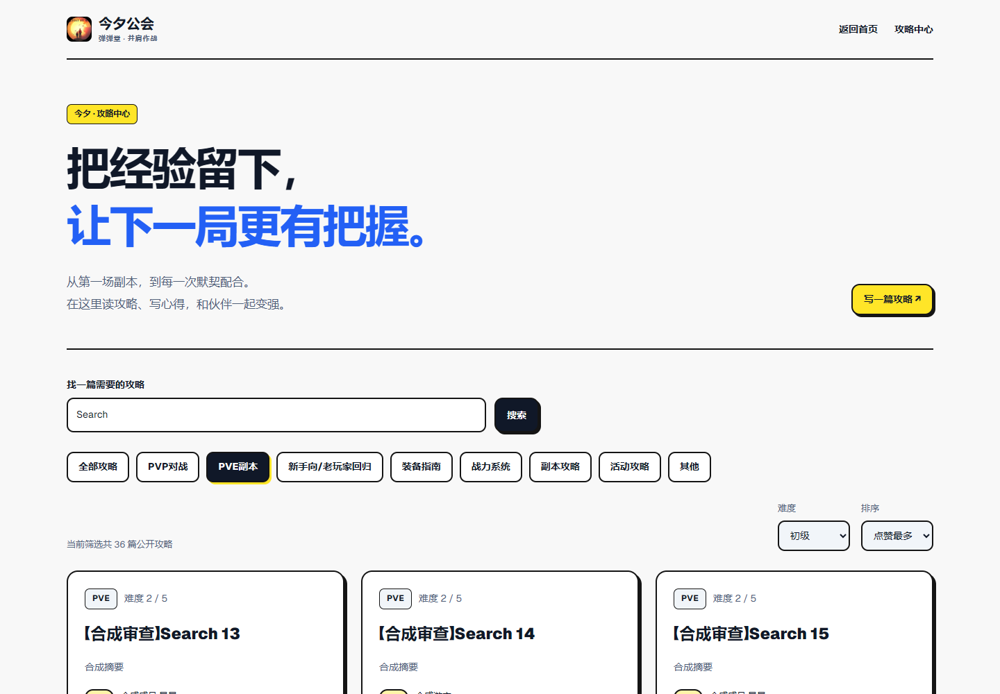
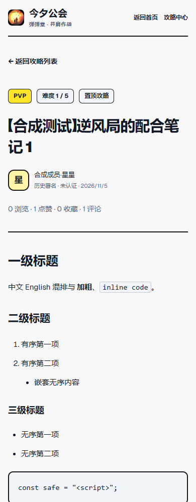
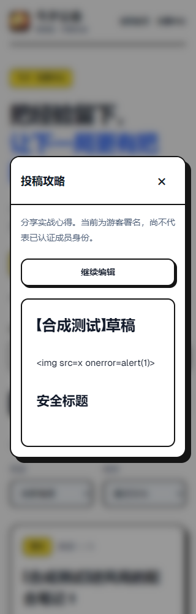
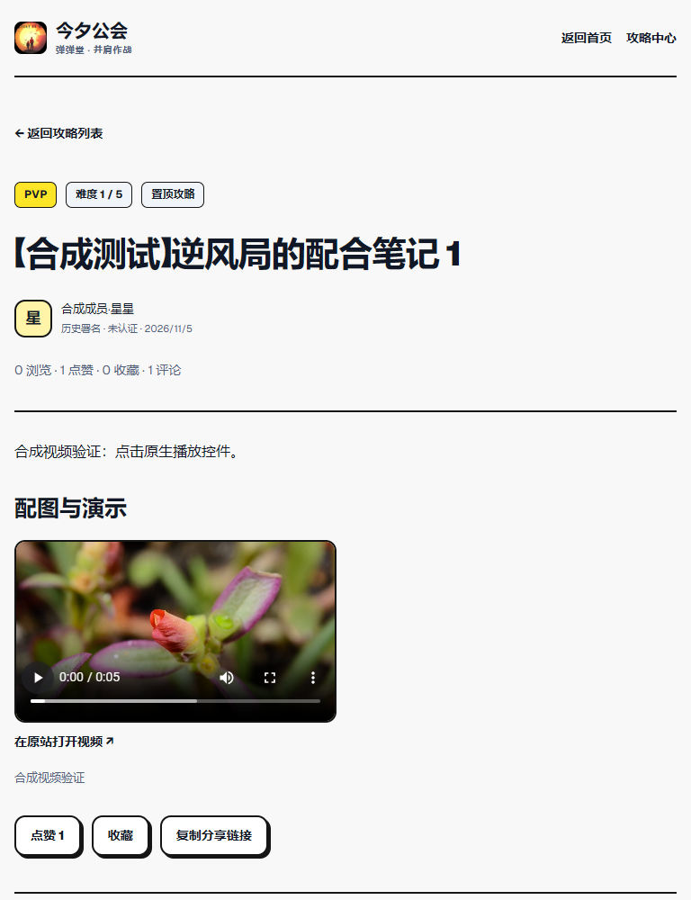
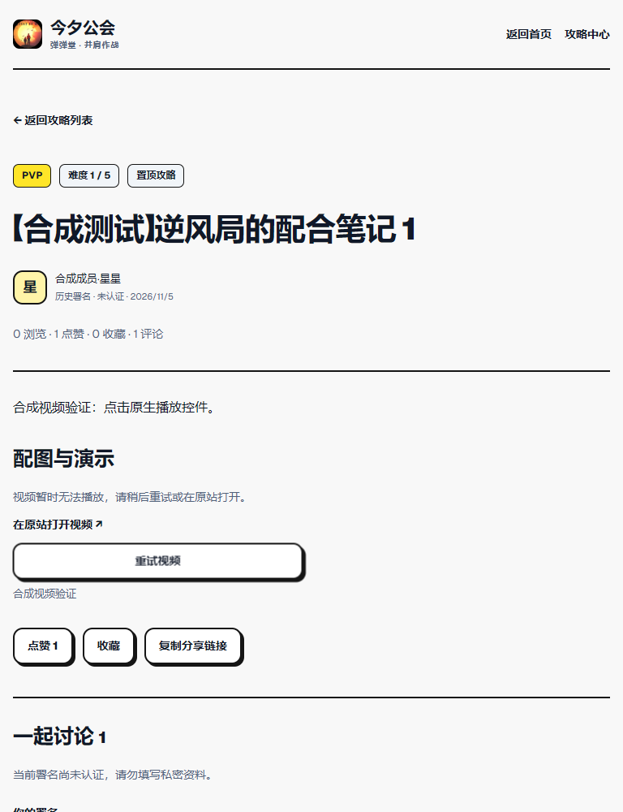

JINXI-ARCH-005R · 待用户验收 · 未合并 / 未上线保留原框，补齐攻略与安全边界。
这里的攻略、留言和头像均为明确合成数据。预览不转发生产 API；本机 PostgreSQL 集成测试另行执行并已停止。构建通过，TypeScript 保留28条历史错误，新增0；Lint及原API测试命令未通过。
可核验记录
12轮性能：桌面攻略首开中位数176→179ms，慢手机2055→1869ms，样本区间重叠，不能宣称稳定提速。首页JS -279B、CSS +371B；四宽度首页顶部像素差0。
头像原框与问题修复
完整筛选链接 · 1440
安全正文层级 · 390
投稿预览 · 320
允许的 HTTPS 视频实际播放
不可用媒体回退
原始运行记录
正式会话 / 头像持久化 / 积分 P0 尚未实施。临时数据库目录清理受自动审批阻止，详情见报告。